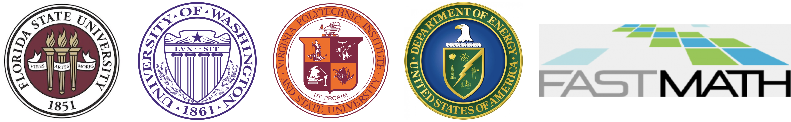

Funding
This project is supported the U.S. Department of Energy,
Office of Science, Office of Advanced Scientific Computing Research and
Office of Basic Energy Sciences, Scientific Discovery through the Advanced
Computing (SciDAC) program under Award No. DE-SC0022263.
This project used resources of the National Energy Research
Scientific Computing Center, a DOE Office of Science User Facility
supported by the Office of Science of the U.S. Department of Energy
under Contract No. DE-AC02-05CH11231 using NERSC awards
BES-ERCAP0020689 (2022), ERCAP-0024336 (2023), ERCAP-0027762 (2024),
and ERCAP-0032454 (2025).
